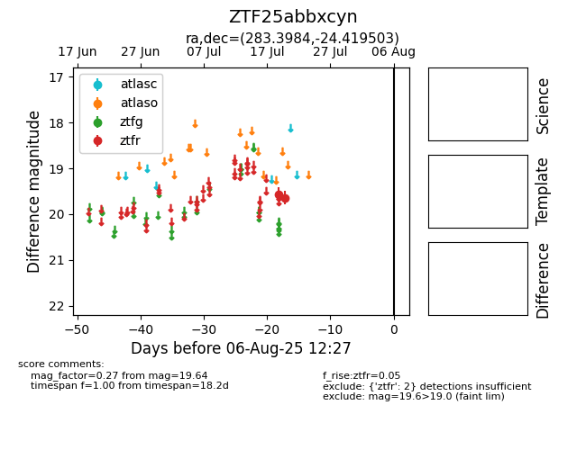

Target ZTF25abbxcyn at 2025-08-05 23:02, see:
FINK: fink-portal.org/ZTF25abbxcyn
Lasair: lasair-ztf.lsst.ac.uk/objects/ZTF25abbxcyn
ALeRCE: alerce.online/object/ZTF25abbxcyn
alt names
ZTF25abbxcyn (ztf,fink)
coordinates:
equatorial (ra, dec) = (283.3984,-24.41950)
galactic (l, b) = (11.1399,-11.31093)
photometry
last ztfr=19.64
2 ztfr detections
